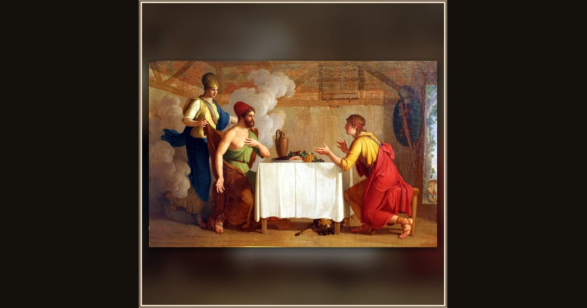

Telemachus Recognizes His Father Odysseus
Johann August Nahl the Younger · late 18th century · Schlossmuseum Weimar · Weimar, Germany
In the swineherd's cottage, Odysseus throws off his beggar's disguise and Telemachus, amazed, realizes the stranger before him is his long-lost father. Explore its place in Book XVI of the Odyssey.